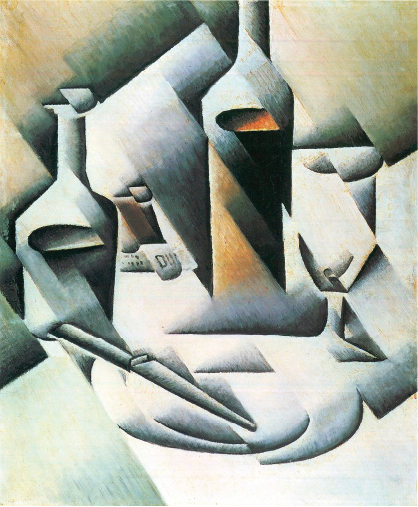
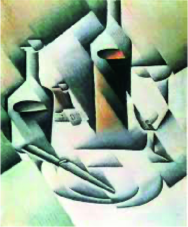
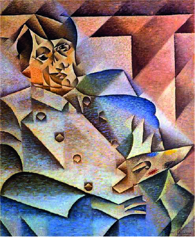
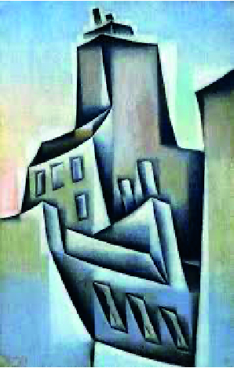

Juan Gris

Juan Gris (1887–1927) fue un pintor español nacido en Madrid, considerado el tercer gran maestro del Cubismo junto a Picasso y Braque. Se trasladó a París en 1906, donde entró en contacto con las vanguardias y comenzó a desarrollar su estilo propio dentro del Cubismo. A diferencia de Picasso y Braque, Gris aportó una mayor claridad y orden a las composiciones, con colores más brillantes y estructuras más equilibradas. Su obra se caracteriza por la precisión geométrica y la elegancia en la disposición de los objetos, lo que lo convirtió en una figura clave para consolidar el Cubismo Sintético.
Orden y claridad dentro de la fragmentación
La obra es una naturaleza muerta cubista en la que se representan objetos cotidianos —botellas, un vaso, un periódico y una pipa— descompuestos en planos geométricos. Juan Gris recurre a una paleta sobria de blancos, grises, marrones y negros, y utiliza contrastes de luz y sombra para generar profundidad dentro de la abstracción. El fragmento tipográfico “DU” en el periódico introduce letras en la composición, un rasgo característico del Cubismo Sintético. En conjunto, la pintura muestra cómo Gris convierte elementos comunes en una construcción estética e intelectual, marcada por claridad y equilibrio.
Obras Destacadas


